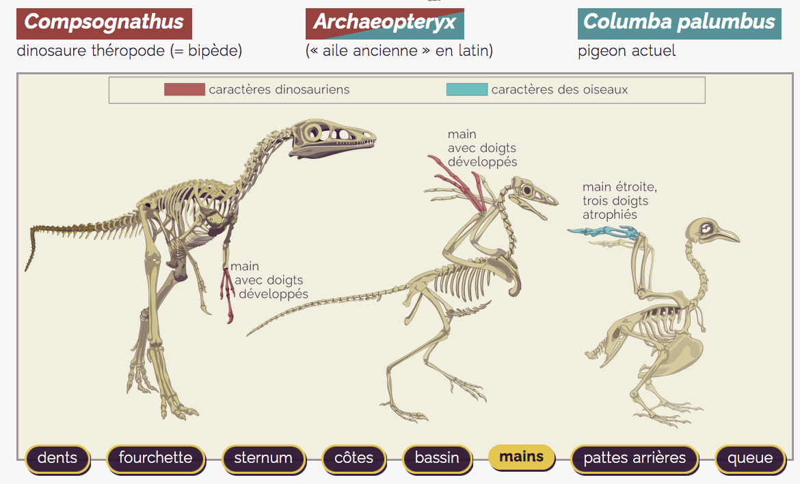
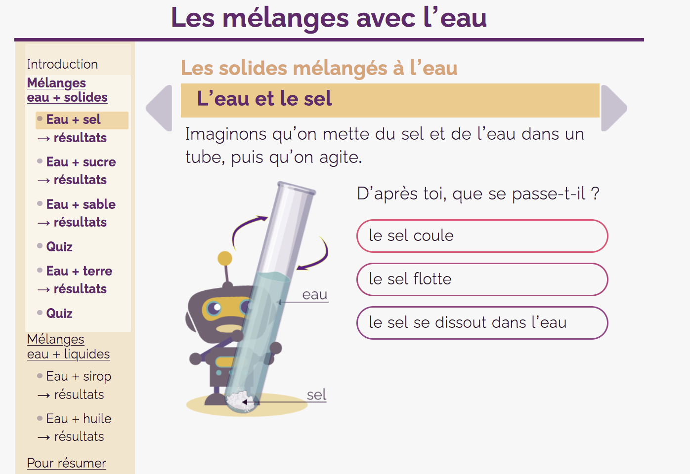
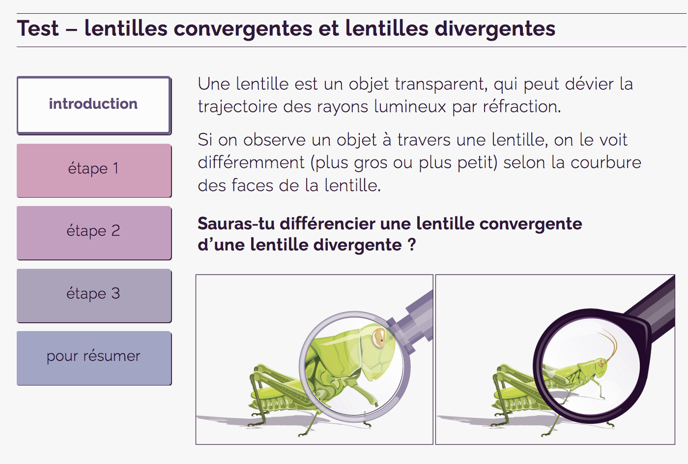

Ces formats pédagogiques ont pour vocation de guider le lecteur dans la découverte d'une notion, l'exploration d'une information sous une forme visuelle et interactive.



Pour aller plus loin :
La charge cognitive – Théorie et applications, L. Chanquoy, A. Tricot et J. Sweller
« Quels apports de la théorie de la charge cognitive à la différenciation pédagogique ? Quelques pistes concrètes pour adapter des situations d'apprentissage », A. Tricot - CNESCO
« Applying the Science of Learning: Evidence-Based Principles for the Design of Multimedia Instruction », R. E. Mayer, American Psychologist
« Pour une approche ergonomique de la conception d’un dispositif de formation a distance utilisant les TIC », A. Tricot et F. Plegat-Soutjis, STICEF – ATIEF
Les niveaux de lecture
L'affichage progressif des informations s'appuie sur une structuration de l'information en plusieurs niveaux de lecture, qui facilitent sa compréhension car ils la mettent en scène et en améliorent la lisibilité cognitive.
Ces niveaux de lecture doivent être perceptibles visuellement, à l'instar des feuilles de style d'une maquette.
Remarque : on considère que le lecteur décode couramment les signaux typographiques sur sept niveaux d’information (7 +/– 2), qui représentent la charge cognitive maximum d’une composition lisible et intelligible, soit sept styles porteurs de sémantique, tels que les titres, les couleurs et le gras du texte, ainsi que les encadrés, etc.
L'interactivité
Elle est au cœur de la structuration de l'information, et le fait de rendre interactive telle partie ou telle autre est un choix éditorial et pédagogique. Les interactions sont ainsi un outil au service de l'axe d'approche défini lors de la structuration de l'information, un fil rouge le long duquel se déroulent les étapes de la découverte : les informations apparaissent à la demande, au rythme de l'apprenant qui explore l'information et se teste…
La navigation
Lorsqu'une notion ou une information est découpée en niveaux de lecture ou en séquences, la navigation en rythme la découverte et participe pleinement à l'interactivité, d'où la nécessité de la présenter explicitement car partie prenante de la structuration.